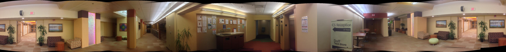
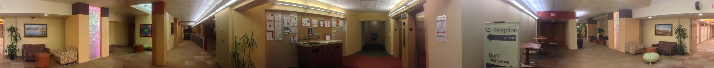

CS 766 Computer Vision Assignment 2: Panorama & Mosaics
Saikat R. Gomes (
saikat@cs.wisc.edu
) & Stephen Lazzaro (
slazzaro@cs.wisc.edu
)
Drag the above image (left/right) to view the entire panorama mosaic

